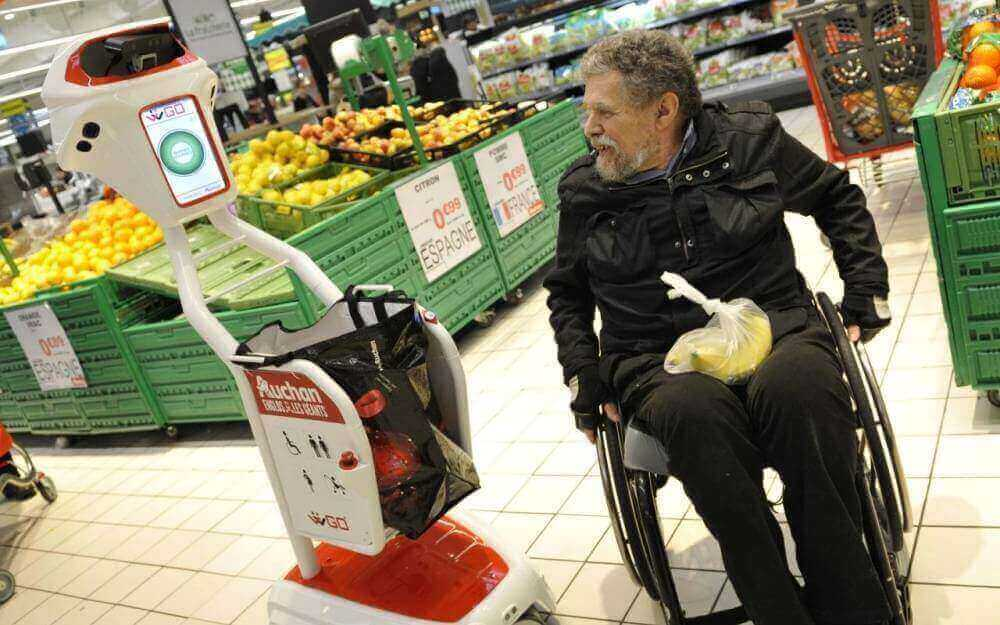
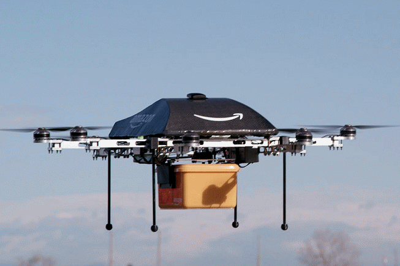
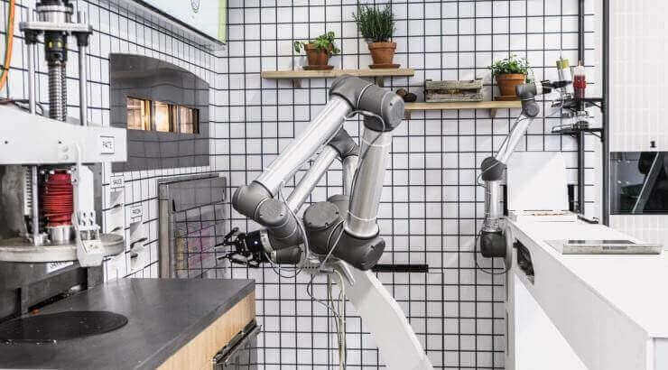

I. Benefits of AI
The robots that are the most common form of AI facilitate human work by making the tasks less tiring for the man. They are common in companies, but we can find in all fields:
1. In the commercial field
1 / 4

2 / 4

Home delivery of parcels by drones (Amazon and Google).
Drone deliveries are currently being tested in Australia and Great Britain.3 / 4
In the United States, more and more start-ups are developing robots to automate various tasks in the world of catering. Chowbotics has designed a robot to prepare salads.
4 / 4

Similarly, the Flippy robot that prepares burgers, designed by the start-up Miso Robotics and Cali Group. Equipped with cameras, thermal sensors and artificial intelligence algorithms, this robotic arm has been programmed to place the steaks on the grill, return them at the right time and place them between the two hamburger buns.
4 / 4

Two French engineers created the "Pazzi" robot that can make pizza very quickly, in less than five minutes. A first pilot restaurant will open in Paris or Val-d'Europe by the end of the year.
2. In the medical field
According to Dr. Laurent Alexandre, the development of genomics, neuroscience and connected electronic sensors monitoring health, will disrupt the medical field. The billions of data that make up our medical file can only be analyzed by AIs. The two most-invested digital groups in health are IBM and Google, but Microsoft, Facebook, Amazon and Baidu have also made a very serious commitment to the sector (L'Express, 27/12/17).
3. The latest advances in AI
Researchers at the University of Maryland have developed the Deception Analysis and Reasoning Engine (DARE), an AI that automatically detects lies in trial videos. DARE has learned to detect and analyze human micro-expressions (raised lips, frowning brows, etc.) and the different frequencies of an individual's voice to see if he is fabulous or not. In the longer term, the program explicitly aims to be used by intelligence services to "predict lying in an open environment".
Researchers at the Massachusetts Institute of Technology (MIT) have succeeded in creating artificial synapses. This would be a decisive advance and the last obstacle to increasing the power of AI. A neural network-based processor mimics the functioning of the human brain by shifting from binary information transmission (current computer processes) to an analog (human) link. This discovery would allow the emergence of "neuromorphic chips" to treat millions of computational flows parallel to the human brain. These processors will have computing power comparable to supercomputers.
China wants to become world leader in artificial intelligence:
The Middle Kingdom wants to become world leader in artificial intelligence and no longer hides its ambitions of hegemony. The Chinese government has, in fact, recently released the national development plan that it intends to put in place for the emergence of artificial intelligence "made in China". This project plans to increase the economic weight of this sector of the future from 150 billion yuan (22.15 billion USD) by 2020 to 400 billion yuan (59.07 billion dollars) by 2025, according to the official figures provided by the Chinese government.
For example, in China, the JT is presented by Artificial Intelligence. The Xinhua News Agency has developed a virtual news anchor. With a voice of synthesis, Qiu Hao is able to read news and to modulate its expressions according to the spoken words.
In all these areas, AI is therefore beneficial for the man who has no reason to be afraid. Nevertheless, it can also present certain risks.